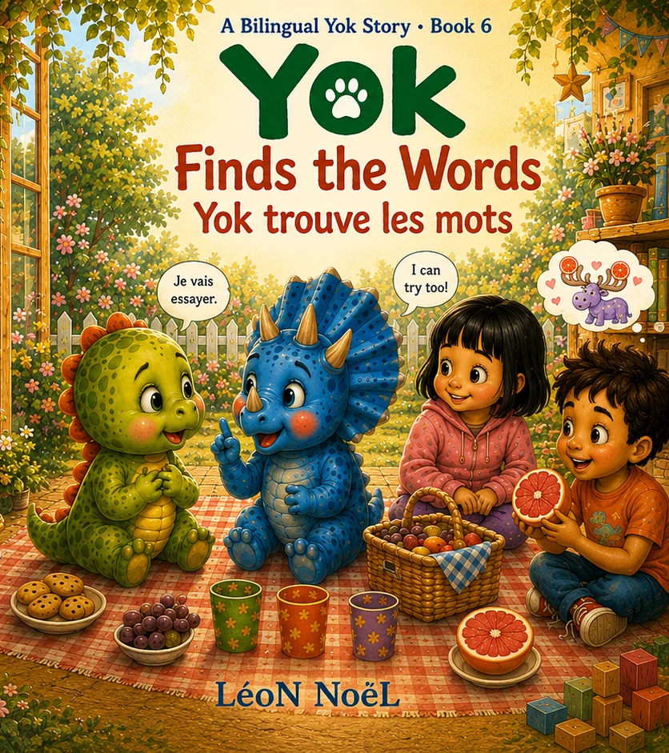

A Bilingual Yok Story · Ages 3–6 · English + French
Yok Finds the Words
Yok trouve les mots
Sometimes the bravest words are the ones that are not perfect yet.

Inside the story
Make imperfect language feel brave, useful, and worth trying.
At a Friendship Picnic, everyone will say a sentence in English and French. Yok and Tibo each know one language more easily than the other, so they practice together and discover that words do not have to be perfect to connect.
At the Friendship Picnic, Yok and Tibo each have one language that comes more easily. Practicing together shifts the goal from “say it perfectly” to “help each other connect,” a reassuring message for early language learners.
Why this story can help
Make imperfect language feel brave, useful, and worth trying.
At the Friendship Picnic, Yok and Tibo each have one language that comes more easily. Practicing together shifts the goal from “say it perfectly” to “help each other connect,” a reassuring message for early language learners.
Good for
- Language-learning confidence
- English–French practice
- Trying words without perfection
Looking for a screen-free follow-up? Download the free companion storytime kit →
Keep the story going
Free companion resources.
Printables for home, classroom, library, or a quiet follow-up after reading.
Explore more
Find the next story for this moment.
The Yok world